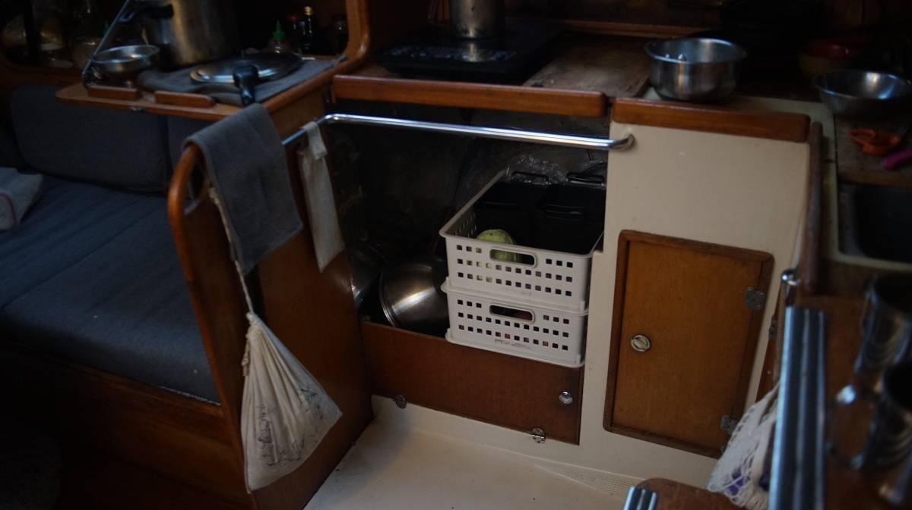
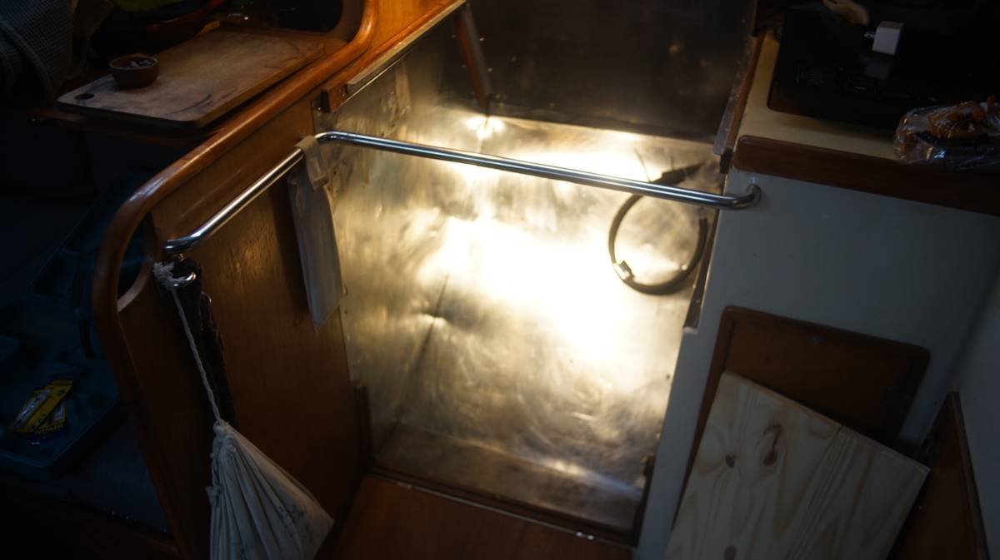
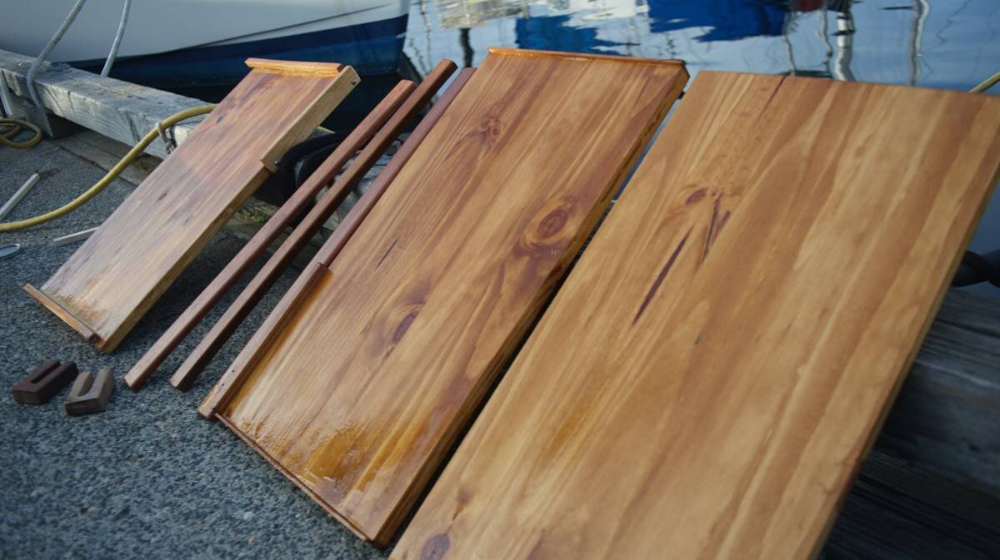
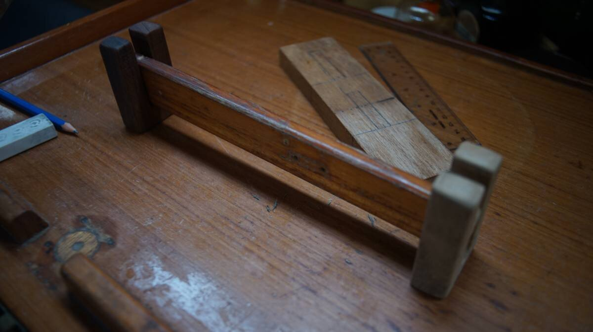
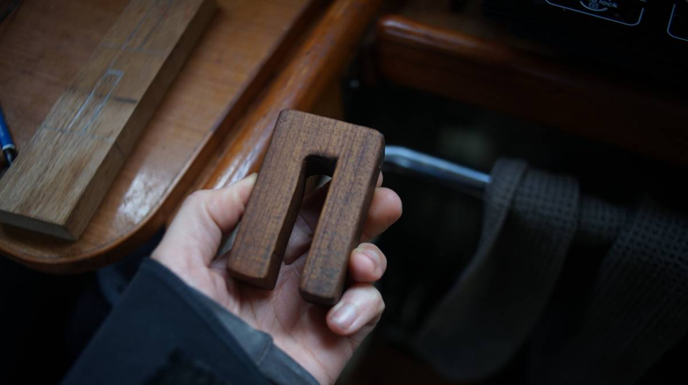

open pantry
2024.01.19
Victoria, BC.
We have lived without refrigeration since 2016, and have since kept our produce in open bins that we store in the v-berth. Pino has an icebox, but access to it is difficult, and the space is chasm-like. Retrieving any item at the bottom of said chasm involves diving head first into the icebox, it induces neck pains in tall people and bruises the ribs of short people. Instead of holding produce, this space has instead housed large containers of condiments and oils, jars of lacto-fermented goods (see lactofermentation), and more recently our diy carbonation system.
This year we finally downsized from a 3-burner stove with an oven to a single LPG burner, this freed up plenty of space for our dream pantry. Keeping produce in bins in the v-berth is fine, we've been doing this for years and could have continued for many more, but now that this space has opened up we are ready for a change!
Why an open pantry? We like the idea of an open pantry because it is easier to keep track of what we have, refrigerator shelves, or iceboxes, are often deep and newer items get stacked ahead(or above), giving ample time for forgotten produce to rot. With bins, we see the contents everyday and use up the more perishable items(greens) first. The ideal open pantry ought to have gaps to permit air to circulate.
How many bins? Two bins is enough to store our produce, three would be ideal but our space doesn't permit it. For our planned setup, most vegetables will go in the top bin, and potatoes and onions will go in the lower bin. We keep etylene-producing fruits(like applies and banana) separate, storing them in hanging bags in other parts of the boat. We sometimes store more perishable items under our sink, in an uninsulated space under the waterline which can get very cold in the winter/spring/fall (we can keep 1L of soymilk there without it going bad). On a long ocean passage, we have a third bin to keep extra produce, but most times two bins is plenty.
Building the shelves
The two white bins in the above photo hold our produce, we haven't installed the shelves yet, but the bins resting in that space give a good preview of what it's going to look like. It'll be nice to have the produce near the galley again! We got used to walking to the bow to get a carrot or an onion, but in heavy seas it is a challenge.
We bought a length of pine meant for shelving and used a circular saw(borrowed from a friend, thanks Peter!) to cut it into 4. Two will serve as shelves, the other two will support the gimballed stove. Pine is very light-colored, so we stained the wood with coffee to help darken the grain and applied varnish-to strengthen them, to protect them from humidity and to make them easier to clean.
It's still cold outside, but doing work on the dock when the sun is out is fine.
The back of the shelves have a lip on one side to keep the pots from sliding backward when the boat is heeled over. The front will have a horizontal bar, secured by two hardwood U blocks. The two U blocks will be bolted(x3) to the walls. A lot of the shelves on the boat use this same design to keep objects in place.
The above horizontal bar is an off-cut used to test the blocks, the actual bars will be much longer than this but this photo gives a good preview of what we are attempting to do.
The U in the blocks were carved using a handsaw, a drill and a round file. We used the handsaw to cut two parallel(ish) lines to accommodate the width of the horizontal bar, then drilled a hole in the bottom of the U to help shave away some material(using the fattest drill bit we had), and then removed some of the left-over material with the round file. A chisel would work well, but we don't have one.
We carry a lot of small lengths of hard wood that are ideal for projects like this, wood that we've accumulated over the years, found on marina shelves, gifted by friends, bought at used marineware stores etc. We made the blocks out of some short lengths of teak.
When we were docked in Minamiise in Japan, (see a home for pino), the local yatch club were re-doing the docks out of some exotic hardwood and so we inherited a lot of small offcuts from them (they were throwing them away).

This is what the final shelves look like! The top basket holds produce like carrots, greens, and brussel sprouts, the lower basket has potatoes and onions. Note that there are better ways to keep items like carrots and greens, see the post by Low-Tech Labs for recommendations.
If you're interested in learning how to keep produce outside of the fridge, see this lovely write-up by Low-Tech Labs.
The gap on the side will act as storage for various cookware.
See our gimballed stove, or return to galley refit.